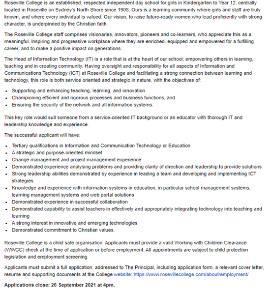
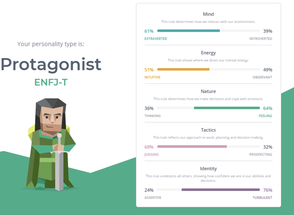
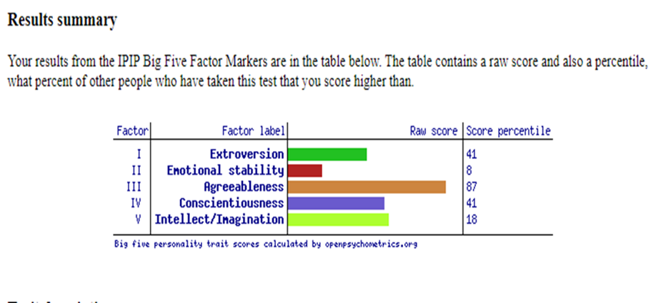
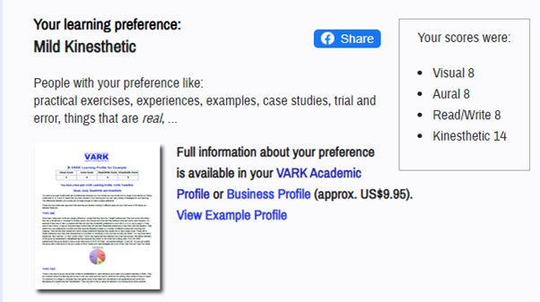
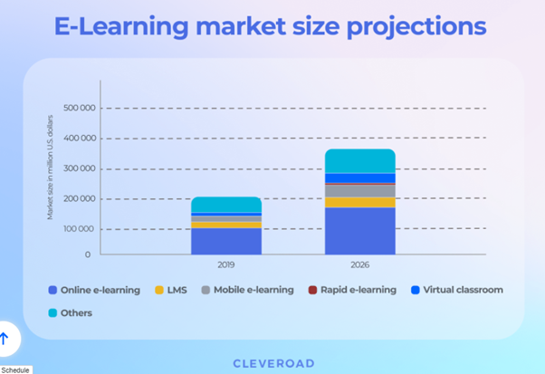

Rukshana Shrestha
Student number: s3928070
Student email address: s3928070@student.rmit.edu.au

I am from Nepal, a small southeast Asian country with beautiful mountains and natural sceneries. My mother tongue is Newar, one of the oldest languages in the country. We follow Hinduism and Buddhism and celebrate festivals, traditions and customs almost every month.
Education: I have completed my bachelor’s in hospitality management, then I did my master’s in accounting. After that, I got interested in teaching. Now I am studying for a master in teaching (Secondary), which I enjoy learning about the history of Australia and its inclusive culture. I am very excited about my path to become a teacher.
I can speak Nepali, some basic Hindi, English and Newar. I like to go out and spend time with a close group of friends to hike in a quiet, serene place. Also, after being a mother, I love spending time with my daughter and see her quirky moves.
Interest in IT
When you think about Information Technology, it is everywhere, directly or indirectly. My interest in IT started once I graduated high school. At this stage, computers were not major subjects in schools, and mobiles were starting to come into people’s hands. And I grew up in a very humble family, so I only got my mobile after year 12. We had cyber cafes, but I rarely visited them. After completing my year 10, I did my 3-month course in hardware, which created a curiosity in me for the first time. So, I wanted to do my bachelor’s in information technology, but the course was costly, so I studied hospitality management. While studying hospitality, I started my Facebook account for the first time. I came into this new world of IT, where the use of computers to do assignments, access resources, e-libraries, and e-learning.
My interest in IT is cybersecurity, and if I get any opportunities, I would like to study cybersecurity, even if it is just a short course. Nonetheless, I am studying teaching full-time, so I am here to gain as much knowledge as I can. There is no particular reason for me to choose RMIT. I was looking for a university or college that offered single subjects when I came across Open University, which put me through RMIT.
At the end of this subject, I hope to learn basic concepts, various components and principles of IT, and current and future trends.
Ideal Job
Job Advertisement Snapshot

Job Link
With the boom in new technologies and artificial intelligence (Intel, 2019), we need IT in every part of our lives. I can see many opportunities available to teachers who have knowledge and experience in Information and Communications Technology. When I was given the option of choosing maths or IT for my curriculum subject, I chose IT. This role particularly interested me because it entails both a service-oriented and strategic mindset. I have been in the service industry, and I feel fulfilled when I can help a guest and make them happy. And now, I believe, to serve the future generation and help them build a successful future will be the kind of role I dream of. So, this is the reason why I chose this particular job opportunity.
The successful candidate needs to have a degree in preferably Information and Communications Technology or an Education degree for this role. With experience in change and project management, demonstrated experience in ICT working environment, developing and implementing strategies and leading a team, a candidate must have problem-solving, leadership and analytical skills and a strong interest in innovative and emerging technologies. Also, a successful candidate should have strong educational background demonstrating knowledge and experience with school management systems, learning management and web portal solutions. S/he must have demonstrated experience to assist teachers by integrating technology into teaching and learning.
Right now, I am taking my first step that is to gain a degree in education. I am studying a two-year teaching course with an initial teaching programme, and upon completion, I am ready to join schools to teach. I already have gained service-oriented skills, problem-solving skills, and now I need to obtain most of the ICT skills, management, leadership skills. I still need to go a long way, but I am building my skills as an IT professional by doing some short courses. If I am successful as a graduate teacher, I will continue to learn new skills at every opportunity. Learning is never-ending progress. As a teacher, I will actively involve in the area of ICT, participating and assisting in integrating technology into teaching and learning. It will help me demonstrate my ICT work experience and help build strategic skills required by the job. I have a great interest in cyber security which helps organisations cope with increasing levels of cybercrime by securing data and systems.
Profile (Personality Tests)
Myers-Briggs test

This test tells me that my personality type is Protagonist, and they are natural-born leaders full of passion and charisma. It means I am perfectly fit for becoming a good teacher who is a relief since I am preparing to become one. It tells me that the protagonists take great pride and joy in guiding others to work together, so I work better in teams than alone. I feel that I work great in teams too. I like to have fun while working so that it is not monotonous and boring. When forming a team, I believe I should look for people who help me, understand me, share the same vision, and be honest, most importantly. I think these test results have indeed motivated me and made me feel good about myself.
The Big Five Personality Test Results

The test result is a bit different from the Myers-Briggs test result. It showed a low score on extroversion which means the tendency to become solitary and reserved. It shows a preference to work alone than with the team. However, it also showed me as confident, helpful, trustworthy, and cooperative, a little too trusting and willing to compromise. I sometimes like working alone if the task needs my full attention, and I do not want to be distracted, but I prefer working in teams with the same vision.
VARK’s Online Learning Style Test

I took this test because I wanted to know what kind of learner I am. And I am surprised at how accurate the result was. Yes, I like using visual aids, materials based on real-life experiences instead of theoretical readings. Rather than theories, I want to learn the mindset of the theorists.
Online/ Remote Proctoring Software Project
Overview
The world has quickly shifted to online activities after the start of the Covid-19 pandemic in 2020. The world went into lockdown where people had to stay at home to reduce movements and spread of the virus. Borders closed, some businesses had to shut down, schools, universities closed, restaurants closed, but life needs to move on. So, taking advantage of technology, most businesses had to take a different approach to solve this problem and adapt to this new way of living. Likewise, schools went online, conducting virtual classes to prevent them from continuous learning. But what about the exam? The student lost almost a year because the exams could not be conducted virtually. So, this project proposes an idea for online proctoring for a cloud-based learning management system in schools, colleges, universities and other learning institutes.
Motivation
Nonetheless, the e-Learning market will continue to grow with or without this pandemic. Forbes predicts the growth will reach $325 billion by 2025 (Maria & Stanislav 2021). With the pandemic, people have already been used to this new way of living, like commuting from home, ordering food and groceries, shopping online, and everything online. So even after the pandemic, I believe people would want that flexibility and an alternative to sit for an exam. For instance, it is confirmed that the famous English test PTE have gone online, and candidates will be able to sit for an exam from the comfort of their home or any other place (Pearson 2021). From the table below, we can analyse that there will be a tremendous market for this software.

Description
AI-based surveillance is growing exponentially in different countries, and at least 75 countries in the world are actively using this technology for surveillance purposes (Feldstein 2019). The demand for this technology is also growing in the education industry. So, addressing this demand, this software will help schools and institutions conduct exams online. The main focus of this software is to verify identities and making sure of the exam integrity offering custom solutions to the education organisations (Oxagile 2021). The features of this software, which can be customised as per the requirements of the client:
- The client will be able to automate the user registration fully.
- It will use a multi-factor identity check to make this software cheating-resistant.
- It gives the users the flexibility to schedule the exam. It might be scheduled or have on-demand 24/7 access.
- The clients will be provided with a secondary camera video feed for 360-degree candidate view so they can monitor the live exam, alert them of any suspicious movement and intervene immediately, if required (Das 2021).
- It allows the users to share screens.
- Automatic authorisation of users with facial recognition technology.
- The user will be unable to use all the browsers that help students to cheat.
- The main highlight of this software is the AI-based behavioural biometrics that uses facial and emotion recognition to send alerts and warnings if there are any suspicious activities. For instance, if the face does not match, the candidate is not present in front of the camera, facial movements, exam window navigation, detection of human speech or other person’s presence in the room. Also, biometrics is used for object recognition. It detects any suspicious activity like multiple faces, objects like mobile, books, documents etc., in the surrounding for security.
- It gives real-time admin access to exam sessions and sends information if there are any incidents in real-time.
- Also, it gives an option of recorded proctoring as well. If the users can’t sit online, they can record their exams. The video reels with time-stamped events will help analyse and report any suspicious activities for an immediate review that questions the integrity of the exam.
Tools Technologies
This innovative technology will accurately track activities performed by students through their webcam in both real-time and offline mode (Yelini 2020). The surveillance will be analysed by Artificial Intelligence (AI). The AI-based Behavioural Biometrics will detect any suspicious activities through face, emotion and object recognition. It will alert any head movements, light and audio level changes, and window resize events, any unauthorised person in the room or objects that help students cheat (Yelini 2020).
Skills Required
For the development of this software, the following are the skills required and software required:
- Bachelor’s or preferably Master’s Degree in Computer Science
- Experience in Software Development preferably Artificial Intelligence
- Programming experience with one of the modern languages like Java, Python or C++, to write code and unit tests, and integrate code with other learning management systems and student’s web browsers (Indeed 2021)
- Excellent oral and written communication skills
- Experience building software applications through internships, course projects, hackathons or personal projects (Indeed 2021)
- Understanding of data structures, algorithms and object-oriented Programming
- Strong software design capabilities
- Strong analytical and problem-solving skills (Proctorio 2021)
- A strong interest in Artificial Intelligence
- Experience in the education industry is a plus.
Outcome
If this project is successful, it will significantly impact the self-learning capabilities of learners (Nouri 2020), specifically in schools. Despite the reasons (unless being sick or physically unable to attend), where students are not able to attend the exam centre, they will still be able to give an exam from the comfort of their home or any other places online or offline. This AI-based software will help schools process videos in both real-time and offline mode. It will give flexibility to both schools and students.
References
- Das, J 2021, 15 Best Online Exam and Assessment Proctoring Software to Look Up, Software Suggest, Retrieved September 19, 2021 from: https://www.softwaresuggest.com/blog/best-online-exam-proctoring-software/#
- Feldstien, S 2019, The Global Expansion of AI Surveillance, Carnegie Endowment for International Peace, Retrieved September 19, 2021 from: https://carnegieendowment.org/2019/09/17/global-expansion-of-ai-surveillance-pub-79847
- Intel 2019, Preparing for the future of IT, Intel IT Annual Performance Report. Retrieved September 18, 2021 from: https://www.intel.com/content/www/us/en/business/resources/future-of-it.html
- Jose, S 2020, A Complete Guide to Online Remote Proctoring, Talview, Retrieved September 19, 2021 from: https://blog.talview.com/a-complete-guide-to-online-remote-proctoring
- Maria, D, & Stanislav, K 2021 How to Create an e-Learning Website: Business Models, Core Features, and Cost. Cleveroad. Retrieved September 19, 2021 from: https://www.cleveroad.com/blog/e-learning-website-development
- Nigam, A, Pasricha, R, Singh, T. & Churi, P 2021, A Systematic Review on AI-based Proctoring Systems: Past, Present and Future. Education and Information Technology 26, 6421–6445 (2021). https://doi.org/10.1007/s10639-021-10597-x
- Nouri, S 2020, How AI Is Making An Impact On The Surveillance World, Forbes, Retrieved September 19, 2021 from: https://www.forbes.com/sites/forbestechcouncil/2020/12/04/how-ai-is-making-an-impact-on-the-surveillance-world/?sh=717c4dc1265e
- Oxagile 2021, Remote Proctoring Software Development, Oxagile, Retrieved September 19, 2021 from: https://www.oxagile.com/competence/edtech-solutions/proctoring/
- Proctorio 2021, Software Engineer Job Opportunity, Proctorio, Retrieved September 19, 2021 from: https://angel.co/company/proctorio/jobs/104829-software-engineer
- Indeed 2021, Software Development Engineer - Amazon Robotics - 2022 Grad, Indeed, Retrieved September 19, 2021 from: https://www.indeed.com/viewjob?jk=be77350e87cd2ef1&tk=1ffuf3e4vpibc803&from=serp&vjs=3
- Selleo 2020, How To Build A Learning Management System From Scratch, Selleo, Retrieved September 19, 2021 from: https://selleo.com/blog/how-to-build-a-learning-management-system-from-scratch
- Yelina, Y 2020, Four Innovations To Make Your LMS Stand Out, Innovation & Tech Today, Retrieved September 19, 2021 from: https://innotechtoday.com/four-innovations-to-make-your-lms-stand-out/